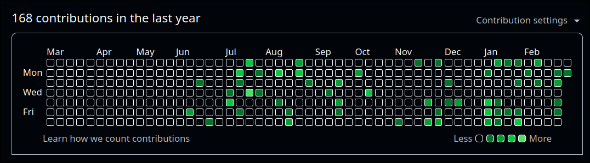

| Layer | Stack |
|---|---|
| Performance |
Rust
Go
Low-level concurrency
|
| Backend |
Bun / Elysia
Python data engines
|
| Infra |
PostgreSQL
Redis
Docker
Arch Linux
|
| Interfaces |
TypeScript
React
Data visualization
|
"Build systems that remain when narratives fade."— Albert Agurto Farfan · Perú · March 2026